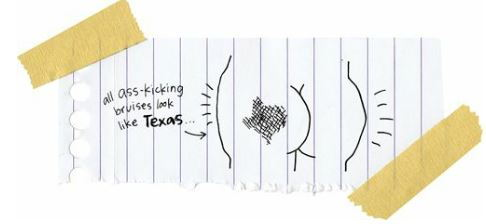
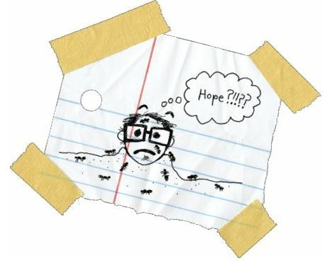

Go Means Go
After Mr. P left, I sat on the porch for a long time and thought about my life. What the heck was I supposed to do? I felt like life had just knocked me on my ass.
I was so happy when Mom and Dad got home from work.
“Hey, little man,” Dad said.
“Hey, Dad, Mom.”
“Junior, why are you looking so sad?” Mom asked. She knew stuff.
I didn’t know how to start, so I just started with the biggest question.

“Who has the most hope?” I asked.
Mom and Dad looked at each other. They studied each other’s eyes, you know, like they had antennas and were sending radio signals to each other. And then they both looked back at me.
“Come on,” I said. “Who has the most hope?”
“White people,” my parents said at the same time.
That’s exactly what I thought they were going to say, so I said the most surprising thing they’d ever heard from me.
“I want to transfer schools,” I said.
“You want to go to Hunters?” Mom said.
It’s another school on the west end of the reservation, filled with poor Indians and poorer white kids. Yes, there is a place in the world where the white people are poorer than the Indians.
“No,” I said.
“You want to go to Springdale?” Dad asked.
It’s a school on the reservation border filled with the poorest Indians and poorer-than-poorest white kids. Yes, there is a place in the world where the white people are even poorer than you ever thought possible.
“I want to go to Reardan,” I said.
Reardan is the rich, white farm town that sits in the wheat fields exactly twenty-two miles away from the rez. And it’s a hick town, I suppose, filled with farmers and rednecks and racist cops who stop every Indian that drives through.
During one week when I was little, Dad got stopped three times for DWI: Driving While Indian.
But Reardan has one of the best small schools in the state, with a computer room and huge chemistry lab and a drama club and two basketball gyms.
The kids in Reardan are the smartest and most athletic kids anywhere. They are the best.
“I want to go to Reardan,” I said again. I couldn’t believe I was saying it. For me, it seemed as real as saying, “I want to fly to the moon.”
“Are you sure?” my parents asked.
“Yes,” I said.
“When do you want to go?” my parents asked.
“Right now,” I said. “Tomorrow.”
“Are you sure?” my parents asked. “You could maybe wait until the semester break. Or until next year. Get a fresh start.”
“No, if I don’t go now, I never will. I have to do it now.”
“Okay,” they said.
Yep, it was that easy with my parents. It was almost like they’d been waiting for me to ask them if I could go to Reardan, like they were psychics or something.
I mean, they’ve always known that I’m weird and ambitious, so maybe they expect me to do the weirdest things possible. And going to Reardan is truly a strange idea. But it isn’t weird that my parents so quickly agreed with my plans. They want a better life for my sister and me. My sister is running away to get lost, but I am running away because I want to find something. And my parents love me so much that they want to help me. Yeah, Dad is a drunk and Mom is an ex-drunk, but they don’t want their kids to be drunks.
“It’s going to be hard to get you to Reardan,” Dad said. “We can’t afford to move there. And there ain’t no school bus going to come out here.”
“You’ll be the first one to ever leave the rez this way,” Mom said. “The Indians around here are going to be angry with you.”
Shoot, I figure that my fellow tribal members are going to torture me.
